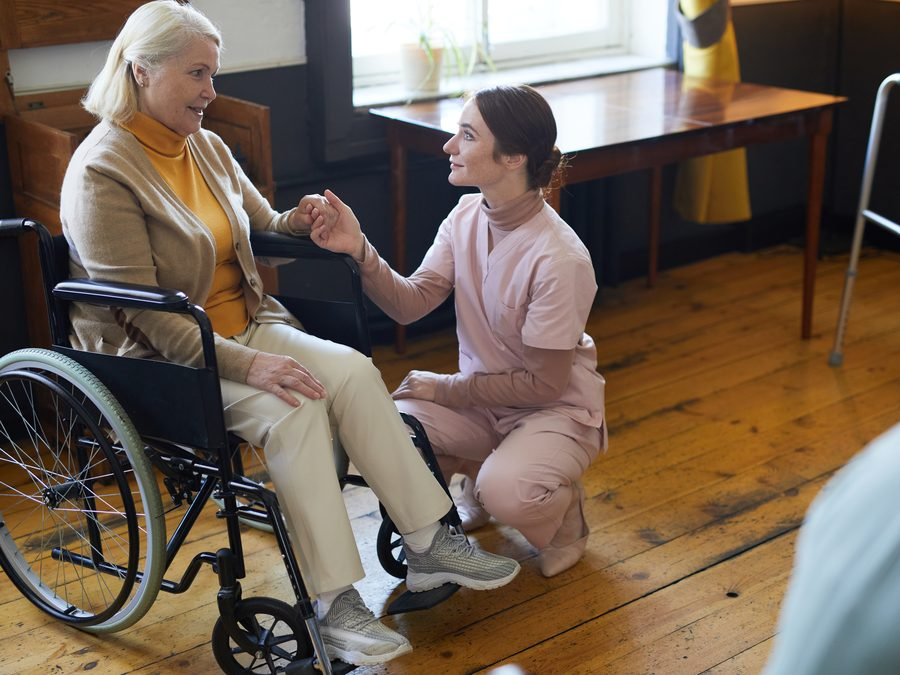
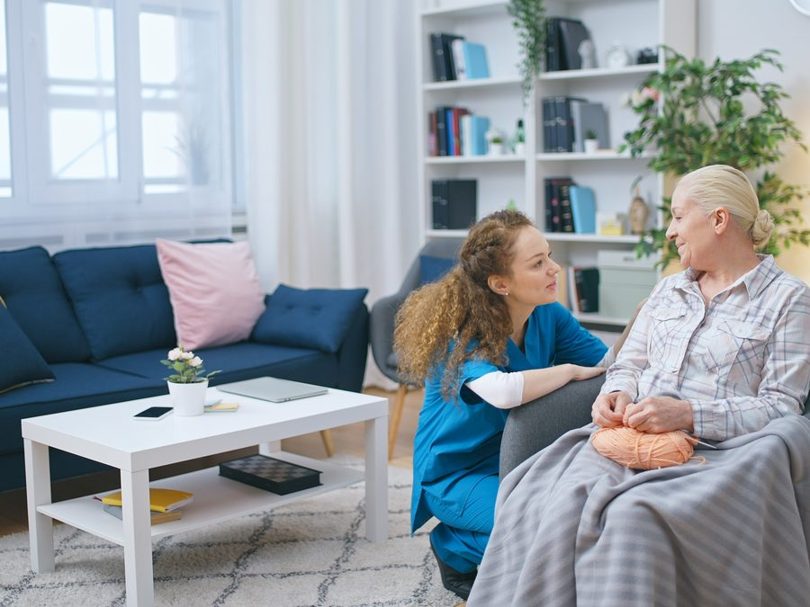

Nurse-Led Care
Founded and led by a Registered Nurse. You're not getting a staffing company — you're getting clinical oversight and accountability on every care plan.
Love · Dignity · Respect
Serving Jefferson & Shelby County, Alabama — nurse-led, family-centered, available 24/7.
When your loved one needs care, you deserve a team you can truly trust. J.A.P. Senior Care Services was founded by a Registered Nurse with over 25 years of experience — bringing clinical expertise and genuine compassion directly into your home.
Why families choose us
Trusted home care in Birmingham built on clinical oversight and genuine heart.
Founded and led by a Registered Nurse. You're not getting a staffing company — you're getting clinical oversight and accountability on every care plan.
J.A.P. was built in honor of our own grandmother, Ethel M. Sanders. Her spirit of care lives in every home we enter.
We're not a franchise. We're your neighbors — serving Jefferson and Shelby County because this is our home, too.
From a few hours a week to round-the-clock care, we're here whenever your family needs us — day or night.
Our services
From a few hours of companionship to around-the-clock clinical care, J.A.P. offers a full continuum of in-home support — every service under the oversight of our Registered Nurse founder.
Loneliness is one of the greatest challenges seniors face — and one of the most overlooked. Our companion care brings meaningful social interaction, emotional support, and genuine human connection into the home.
Maintaining hygiene and daily routines is essential to a senior's dignity and well-being. Our personal care provides compassionate, respectful assistance — helping your loved one feel confident, clean, and cared for every day.
For many families, peace of mind is the priority. Our safety care reduces the risk of accidents and provides oversight for seniors at risk of falls or confusion — protecting independence while keeping the home secure.
Getting to an appointment, a church service, or a family gathering should never be a barrier to quality of life. We provide safe, reliable, respectful rides so your loved one stays connected to the world around them.
Caring for a loved one with memory loss takes patience, specialized knowledge, and a whole-person approach. Our caregivers create a calm, structured environment that reduces anxiety and promotes a sense of security.

Family caregivers give so much of themselves — and even the most devoted need rest. Our respite care gives you the peace of mind to step away, knowing your loved one is in capable, caring hands. A few hours or a few days, we're here.

For seniors with complex medical needs who want to remain at home, our licensed RN and LPN team delivers skilled clinical care in familiar surroundings — bridging the gap between hospital-level care and the warmth of home.
When a loved one enters life's final chapter, what matters most is comfort, dignity, and not being alone. Our end of life care is provided with the utmost sensitivity — supporting both the senior and the whole family through a sacred transition.
Some seniors need continuous care and supervision — day and night. Our 24-hour program ensures your loved one is never alone, with a consistent team providing uninterrupted support across every shift.
Staying healthy and engaged is one of the best ways for seniors to keep their independence and joy. Our wellness services support the whole person — physical, mental, and social — for an active, fulfilling life at home.
Technology helps seniors stay in touch, access telehealth, and live more independently — but it can also be confusing. Our caregivers help navigate phones, tablets, video calls, and health devices with patience and clarity.
A business built on love
J.A.P. Senior Care Services was dedicated to our grandmother and great-grandmother, Ethel M. Sanders — who ignited the spirit of care and compassion for others in our hearts.
Her legacy is the reason we do this work, and why we show up every single day with love, dignity, and respect for every client in our care.
Ready to start?
Our team is happy to answer your questions, discuss your loved one's needs, and help you understand your options — with no pressure, ever.